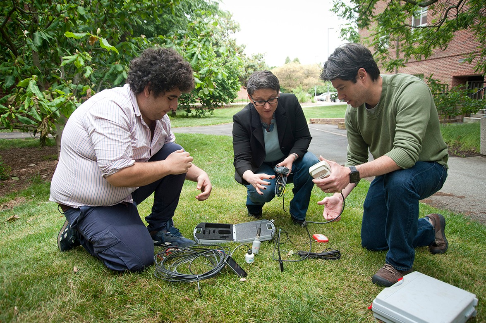

Projects

OAC: Piloting the National Science Data Fabric: A Platform Agnostic Testbed for Democratizing Data Delivery

SENSORY: Software Ecosystem for Knowledge Discovery - a Data-Driven Framework for Soil Moisture Applications
ANACIN-X: Analysis and Modeling of Non-determinism and Associated Costs in eXtreme Scale Applications
BIGDATA: IA: Collaborative Research: In Situ Data Analytics for Next Generation Molecular Dynamics Workflows
Leveraging Kokkos Abstractions to Automate Checkpointing

CIF21 DIBBs: PD: Cyberinfrastructure Tools for Precision Agriculture in the 21st Century

Collaborative Research: PPoSS: Planning: Performance Scalability, Trust, and Reproducibility: A Community Roadmap to Robust Science in High-throughput Applications
Augmenting Hatchet to support scalability and replicability solutions for HPC applications

Collaborative Research: EAGER: Advancing Reproducibility in Multi-Messenger Astrophysics

Leverage Containerized Environments for Reproducibility and Traceability of Scientific Workflows - the case study of Analytics for Neural Network Workflows

Study Performance Portability of the Vector Particle-In-Cell Project (VPIC) across architectures
Flux Scheduler Specializations: Improving Workflow Performance with Scheduler Structure and Policy Tuning
EAGER: Reproducibility in Computational and Data-Enabled Science-Paradigms, Practices, and Infrastructure

JDRD: Empowering Training and Validation Stages in Al-Orchestrated Workflows

Study of Data-intensive Workflows on Next-generation Systems with Emphasis on Memory Access
Moving towards self-adjusting scheduling policies for high performance workflows with Flux’s fully hierarchical scheduling

Driving Next-Generation Schedulers with Machine Learning-Based Application Patterns
Collaborative: EAGER: Exploring and Advancing the State of the Art in Robust Science in Gravitational Wave Physics